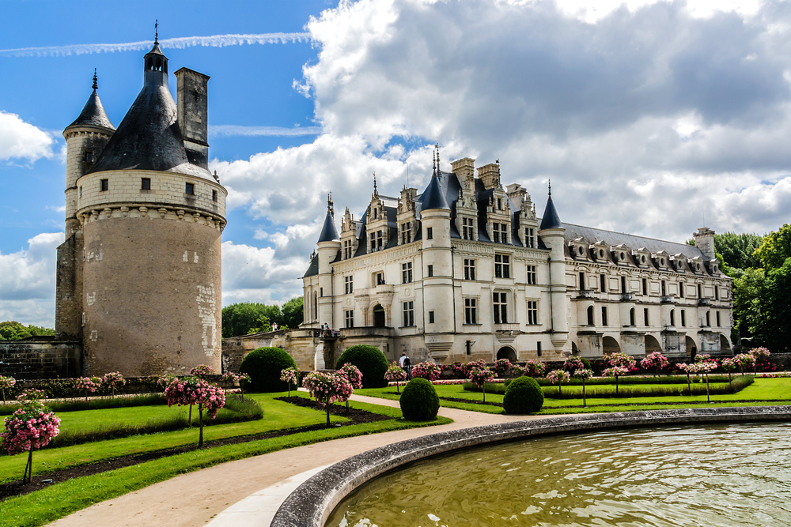
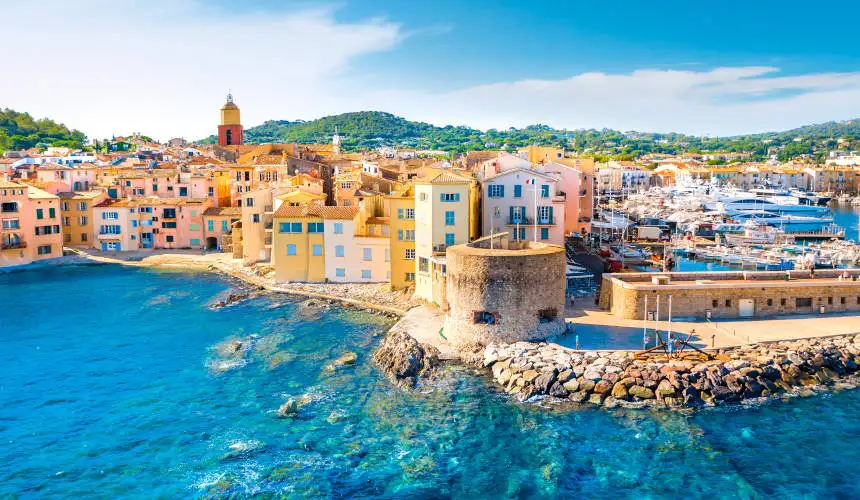

Belezas
Paris – A Cidade Luz
Paris, conhecida como a “Cidade Luz”, é famosa por seus monumentos icônicos como a Torre Eiffel, o Museu do Louvre e a Catedral de Notre-Dame. Com seu charme romântico, ruas elegantes e vibrante vida cultural, Paris é um destino imperdível para quem ama arte, história e gastronomia.

Vale do Loire
O Vale do Loire é conhecido por seus magníficos castelos históricos, como Chambord e Chenonceau, espalhados em uma paisagem rural encantadora. É o local ideal para explorar a rica história francesa e desfrutar de vinhos e culinária regional em meio à natureza.

Provença
Provença encanta com seus campos de lavanda, vilarejos medievais e mercados coloridos. A região oferece uma experiência única, com paisagens rurais, cultura tradicional e uma gastronomia saborosa, perfeita para quem busca tranquilidade e contato com a natureza.
.jpg)
Costa Azul (Riviera Francesa)
A Costa Azul é famosa por suas praias de águas cristalinas, cidades sofisticadas como Nice e Cannes, e um clima mediterrâneo agradável. É o destino ideal para quem procura sol, luxo, festas e belas paisagens à beira-mar.
